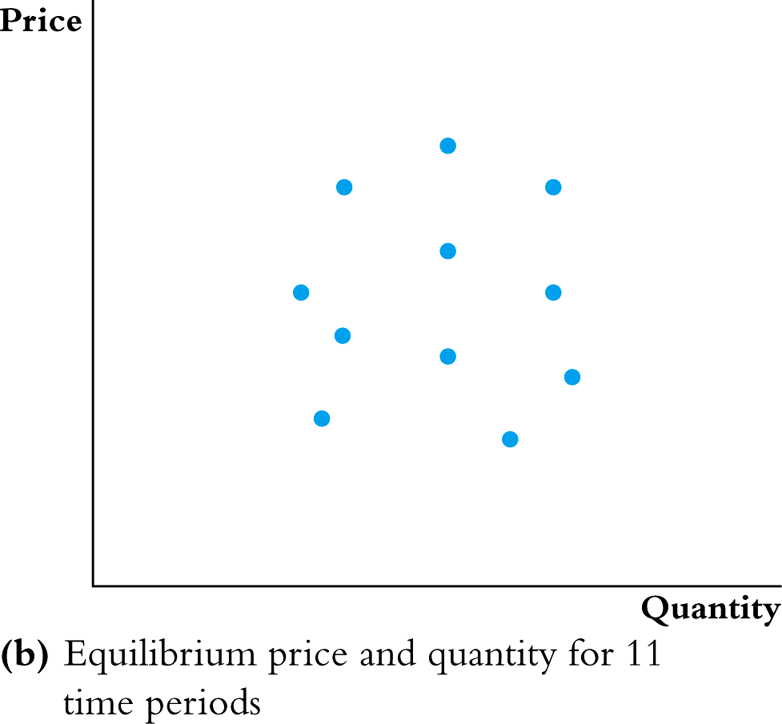
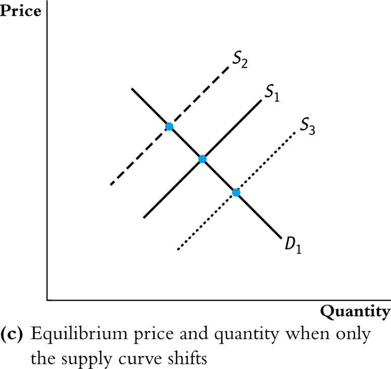
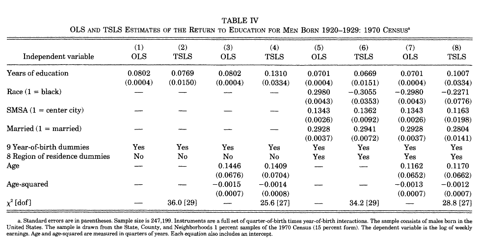

SW Chapter 12
Spring 2026
Textbook Coverage
Three threats to internal validity all produce \(E(u_i | X_i) \neq 0\):
Endogeneity
All three problems result in \(E(u_i | X_i) \neq 0\) — a violation of the zero conditional mean assumption. When this happens, OLS is biased and inconsistent.
Solutions to endogeneity considered previously:
Today: Instrumental variables (IV)
\[\log(wage_i) = \beta_0 + \beta_1 schooling_i + \delta V_i + u_i\]
\[\log(wage_i) = \beta_0 + \beta_1 schooling_i + \delta V_i + u_i\]
\[\log(wage_i) = \beta_0 + \beta_1 schooling_i + \delta V_i + u_i\]
Bottom Line
Neither multiple regression nor panel data convincingly addresses the ability bias in estimating returns to schooling. We need a different approach.
\[\ln(Q_i^{butter}) = \beta_0 + \beta_1 \ln(P_i^{butter}) + u_i\]
When both supply and demand shift, equilibrium data points trace out neither curve
. . .
No — you just see a scatter of equilibrium points

If you can hold demand fixed and only observe supply shifting:
. . .
The instrument holds demand fixed while shifting supply — it moves \(X\) without directly affecting \(Y\)

Broad public policy interest in reducing cigarette consumption.
\[sales_i = 164.4 - 0.38 \cdot price_i + u_i\]
Simultaneous Causality
Sales depend on prices, but prices may also depend on sales. This creates \(\text{Corr}(X, u) \neq 0\), making OLS inconsistent.
\[sales_i = 164.4 - 0.38 \cdot price_i + u_i\]
Simultaneous causality would disappear if we could randomly assign prices to the different states
An instrumental variable is an additional variable \(Z_i\) that satisfies three assumptions:
Start with the population model:
\[Y = \beta_0 + \beta_1 X + u\]
Take the covariance of both sides with \(Z\):
\[\text{Cov}(Y, Z) = \text{Cov}(\beta_0 + \beta_1 X + u, Z)\] \[= \text{Cov}(\beta_0, Z) + \text{Cov}(\beta_1 X, Z) + \text{Cov}(u, Z)\] \[= 0 + \beta_1 \text{Cov}(X, Z) + 0 \quad \text{by } \text{Cov}(u, Z) = 0\]
Solving for \(\beta_1\):
\[\boxed{\beta_1 = \frac{\text{Cov}(Y, Z)}{\text{Cov}(X, Z)}}\]
\[\beta_1 = \frac{\text{Cov}(Y, Z)}{\text{Cov}(X, Z)}\]
Key Feature of IV
Notice we never assumed \(\text{Cov}(X_i, u_i) = 0\). IV explicitly allows for endogeneity — that’s the whole point!
\[\beta_1 = \frac{\text{Cov}(Y, Z)}{\text{Cov}(X, Z)}\]
\[\log(wage_i) = \beta_0 + \beta_1 schooling_i + \delta V_i + u_i\]
\[\beta_1 = \frac{\text{Cov}(\log \text{wage}, \text{distance})}{\text{Cov}(\text{schooling}, \text{distance})}\]
For a dataset with \(n\) observations, replace population covariances with sample covariances:
\[\hat{\beta}_1^{2SLS} = \frac{\widehat{\text{Cov}}(Y, Z)}{\widehat{\text{Cov}}(X, Z)} = \frac{\frac{1}{n}\sum_{i=1}^{n}(Y_i - \bar{Y})(Z_i - \bar{Z})}{\frac{1}{n}\sum_{i=1}^{n}(X_i - \bar{X})(Z_i - \bar{Z})}\]
\[\hat{\beta}_0^{2SLS} = \bar{Y} - \hat{\beta}_1^{2SLS}\bar{X}\]
Called two-stage least squares — why will become apparent shortly.
Stage 1: Regress \(X\) on \(Z\) (the “first stage”)
\[X_i = \pi_0 + \pi_1 Z_i + v_i\]
Form the predicted values:
\[\hat{X}_i = \hat{\pi}_0 + \hat{\pi}_1 Z_i\]
Note: \(X_i = \color{green}{\hat{X}_i} + \color{red}{\hat{v}_i}\)
Stage 2: Regress \(Y\) on \(\hat{X}\) (the “second stage”)
\[Y_i = \beta_0 + \beta_1 \hat{X}_i + u_i\]
Key Insight
The instrument isolates the variation in \(X\) that is exogenous. 2SLS uses only this “clean” variation to estimate \(\beta_1\).
IV uses only the variation in \(X\) driven by the instrument — that’s the whole point.
But this also means we can only observe the effect among people for whom the instrument actually affects their treatment.
Local Average Treatment Effect (LATE)
The IV estimate is local to the people whose treatment status is changed by the instrument, weighted by how much the instrument affects them. It is not the average effect for all units, or even for all treated units.
Implication: The IV estimate may not represent the average effect for everyone — or even for those actually treated.
Practical Implication
When interpreting IV results, ask: For whom does the instrument induce treatment? The IV estimate applies to that group — not necessarily to all units in the sample.
\[sales_i = \beta_0 + \beta_1 price_i + u_i\]
Stata’s ivregress command handles both stages automatically:
packpc (packs per capita)=: endogenous regressor (avgprs)=: instrument (tax)robust: heteroskedasticity-robust standard errorsReading the Syntax
ivregress 2sls Y (X=Z), robust
2sls)=)=). ivregress 2sls packpc (avgprs=tax), robust
Instrumental variables (2SLS) regression Number of obs = 96
Wald chi2(1) = 88.46
Prob > chi2 = 0.0000
R-squared = 0.4219
Root MSE = 19.567
------------------------------------------------------------------------------
| Robust
packpc | Coefficient std. err. z P>|z| [95% conf. interval]
-------------+----------------------------------------------------------------
avgprs | -.4208748 .0447474 -9.41 0.000 -.5085781 -.3331715
_cons | 169.556 7.516482 22.56 0.000 154.824 184.2881
------------------------------------------------------------------------------
Instrumented: avgprs
Instruments: tax2SLS estimates that a 1-unit increase in price leads to a decrease of 0.42 packs per capita.
To understand the two stages, we can do them by hand:
ivregressAlways Use ivregress
The ivregress command uses the correct standard error formula that accounts for first-stage estimation. Never report standard errors from manual 2SLS.
firstThe first option displays the first-stage regression alongside the second stage.
First stage (regress avgprs on tax):
tax: 2.45 (t = 19.78)Second stage (regress packpc on \(\hat{X}\)):
Rule of Thumb: F > 10
The first-stage F-statistic should be greater than 10. If so, the instruments are powerful (relevant).
What if the first-stage F-test is less than 10?
\[\hat{\beta}_1^{2SLS} = \frac{\widehat{\text{Cov}}(Y, Z)}{\widehat{\text{Cov}}(X, Z)}\]
Consequences of Weak Instruments
If the first-stage F-statistic is less than 10, the 2SLS estimates may be biased and confidence intervals may have incorrect coverage. Do not trust the results.
| Assumption | Testable? | How? |
|---|---|---|
| Relevance (\(\text{Corr}(Z, X) \neq 0\)) | Yes | First-stage F-test > 10 |
| Exogeneity (\(\text{Corr}(Z, u) = 0\)) | No | Must argue based on institutional knowledge |
| Exclusion (\(Z\) doesn’t directly cause \(Y\)) | No | Must argue based on theory |
Exogeneity Cannot Be Tested
You lack data on the omitted variable, so you cannot test whether \(Z\) is correlated with it. Exogeneity must be defended with reasoning about the instrument and the omitted variables in question.
Knowledge Check
For the cigarette example, why might someone challenge the exogeneity of sales tax as an instrument? Could states with stronger anti-smoking attitudes set both higher taxes and have lower demand?
\[sales_i = \beta_0 + \beta_1 price_i + \beta_2 income_i + u_i\]
tax as the excluded instrumentTerminology
\[sales_{it} = \alpha_i + \lambda_t + \beta_1 price_{it} + \beta_2 income_{it} + \delta V_i + \omega_{it}\]
Instrument for price is sales tax
Step 1: State FE only
Step 2: State + Year FE
Both estimates still suffer from simultaneous causality bias — price responds to state and time demand shocks.
Step 3: State + Year FE with IV
First stage (predict avgprs using taxs, incomepop, y1995, state FE):
taxs: 1.17 (t = 19.04)Second stage:
\[\log(sales_{it}) = \alpha_i + \lambda_t + \beta_1 \log(price_{it}) + \beta_2 \log(income_{it}) + \delta V_i + \omega_{it}\]
Instrument for log(price) is log(sales tax)
lavgprs: -1.27 (p < 0.001)Best Elasticity Estimate
When price goes up by 1%, sales go down by 1.3%. Demand is elastic, but not terribly so. The CI of (-1.53, -1.00) barely excludes -1, so we can statistically reject that demand is inelastic.
| (1) OLS | (2) 2SLS | (3) 2SLS+controls | (4) State FE | (5) State+Year FE | (6) 2SLS Panel | (7) 2SLS Log | |
|---|---|---|---|---|---|---|---|
| Price | -0.385*** | -0.421*** | -0.687*** | -0.355*** | -0.416*** | -0.409*** | |
| log(price) | -1.269*** | ||||||
| Income | 2.816*** | 0.232 | -1.642* | -1.681** | |||
| State FE | Yes | Yes | Yes | Yes | |||
| Year FE | Yes | Yes | Yes | ||||
| IV | Yes | Yes | Yes | Yes | |||
| N | 96 | 96 | 96 | 96 | 96 | 96 | 96 |
What Changes Across Specifications?
Notice that the price coefficient changes as we add controls and instruments. The preferred specification (column 7) combines all: fixed effects, IV, controls, and logarithms.
What is the effect on grades of studying an additional hour per day?
Would you expect the OLS estimator of \(\beta_1\) to be unbiased? Why or why not?
Stinebrickner and Stinebrickner (2008), “The Causal Effect of Studying on Academic Performance,” The B.E. Journal of Economic Analysis & Policy
Do you think \(Z_i\) (whether a roommate brought a video game) is a valid instrument?
Results: OLS coefficient on study = 0.038; IV coefficient = 0.36 (much larger). Why? Selection bias — students who study more tend to be weaker students compensating with extra effort (negative selection). This negative correlation between study time and ability biases OLS downward. IV corrects this by using only the variation in study time driven by the random video-game assignment.
\[\log(wage_i) = \beta_0 + \beta_1 schooling_i + \delta V_i + u_i\]
Check the Three Assumptions
This instrument has been extensively debated — it illustrates how the assumptions can be challenged even when the research design seems clever.

OLS and TSLS estimates of returns to education, men born 1920–1929 (1970 Census, \(n = 247{,}199\)). Instruments: quarter-of-birth × year-of-birth interactions.
Bound, Jaeger, and Baker (1993) raised two distinct problems with the quarter-of-birth instrument:
Problem 1 — Instrument may not be exogenous: Quarter of birth is empirically correlated with many outcomes beyond schooling:
If quarter of birth is correlated with ability or other determinants of wages, \(\text{Cov}(Z, u) \neq 0\) — the exogeneity assumption fails.
Problem 2 — Weak instruments: With proper age controls, the first-stage F-statistic falls to 1.6 — far below the rule-of-thumb threshold of 10.
Combined Effect
A weak instrument combined with even a small \(\text{Cov}(Z, u)\) can cause the IV estimate to look similar to OLS. The bias “fix” may introduce new bias rather than eliminating the original one.
Recipe Card: Instrumental Variables
1. Identify the endogeneity problem
2. Propose an instrument \(Z\) and argue it is valid
3. Estimate via 2SLS
ivregress 2sls Y (X=Z) controls, robust4. Report and check
Mistakes to avoid
Good IV practice
ivregress (not manual two-step)IV Is Only as Good as the Instrument
An IV estimate with a bad instrument can be worse than OLS. The whole approach depends on finding a convincing instrument — which is why IV papers spend so much time justifying their instruments.
ivregress or xtivreg — never manual two-stepFinal Knowledge Check
Suppose a researcher wants to estimate the effect of class size on student test scores. They propose using school budget per pupil as an instrument for class size. Evaluate: Is this instrument likely to be powerful? Exogenous? Excludable? What might be wrong?
ECON3500 | Instrumental Variables